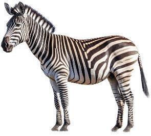
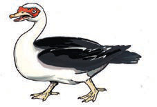

(e)A zebra with black and white stripes stands on four legs. (f)A leopard with dark spots stands and looks ahead.
(f)A leopard with dark spots stands and looks ahead. (g)A brown dog stands with its tail raised.
(g)A brown dog stands with its tail raised.
(h)A duck stands with a white neck and black wings. (i)A brown antelope stands with small horns and long legs.
(i)A brown antelope stands with small horns and long legs. (j)A rooster stands with a red comb and a long black tail.
(j)A rooster stands with a red comb and a long black tail. (k)A green snake is curled on the ground.
(k)A green snake is curled on the ground. (l)A large elephant stands with a long trunk and white tusks.
(l)A large elephant stands with a long trunk and white tusks.Questions
1.Name the domestic animals you observed in pictures a-l.
2.Name the wild animals you observed in pictures a-l.
3.What other wild animals do you know apart from those observed in the pictures?
4.What are the benefits of domestic animals?